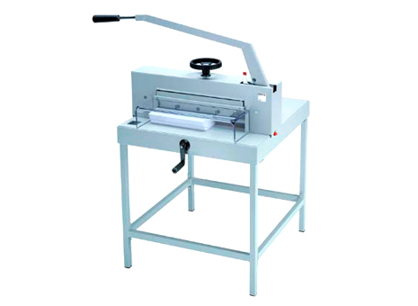

Машината е конструирана с голяма работна маса за обработване на големи по площ материали, а масата
е разделена на 8 работни вакуум зони, контролиращи се отделно.
Краката на машината са с метална рамка, което спомага за стабилност по време на работа.
Инструментът е със специални сензори, позволяващи прецизна работа.
Силен уловител на прах - изчиства праха и стружките.
Използва се за обработка на: дърво, MDF, фурнир, акрилни листи, еталбонд и др.
Ръчна гилотина за рязане на хартия - ширина на рязане до 475мм, 70мм височина на рязане и дълбочина на работния плот 455мм. Патентована система за задвuжване IDEAL. Гилотината е с S.C.S. защитна система за безопасно рязане, нож от висококачествена стомана, шпиндел притискане и ръчна манивела за подравняване. Предната маса е снабдена с прецизна скала в мм/инч за измерване.
Фирмата разполага с товарен камион, микробус и леки коли, за да може да обслужва пълноценно нуждите на клиентите си.
Машината за пробиване на дупки е отличен помощник при направата на менюта,
етикети дипломни работи и други подобни изделия.
––– Технически параметри –––
- Максимална дебелина на картона - 300 gsm;
- Диаметър на отвора - от 3мм до 6мм.
Тази готина машина прави готини неща, като готино, готинско, готическо и готварско. Супер готина е тази машина и я предлагам на всички да я пробват, защото е супер мега яка. Това беше от мен.
Тази готина машина прави готини неща, като готино, готинско, готическо и готварско. Супер готина е тази машина и я предлагам на всички да я пробват, защото е супер мега яка. Това беше от мен.